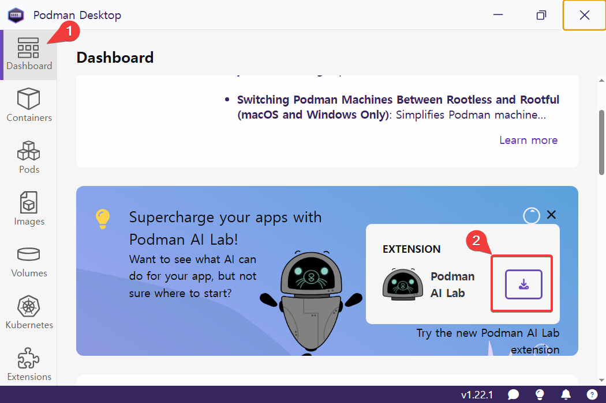
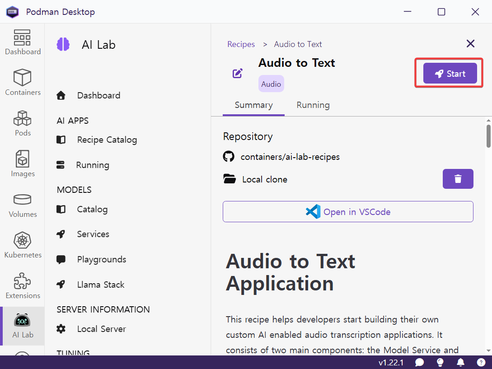
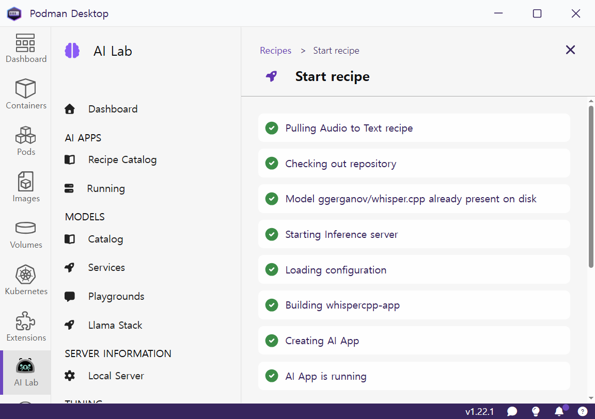
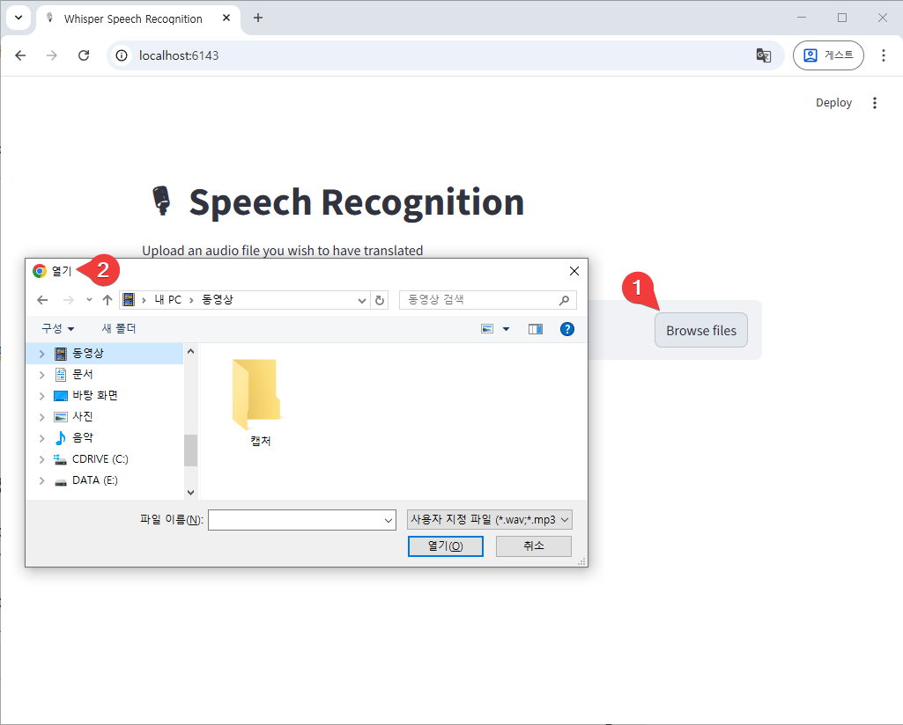
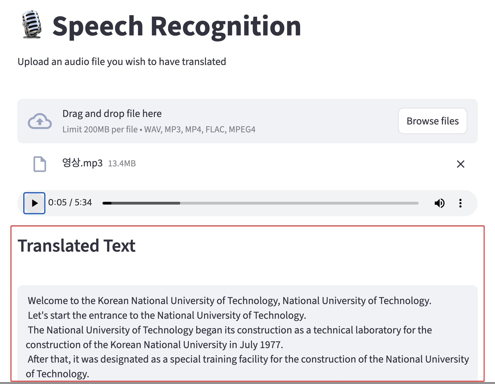
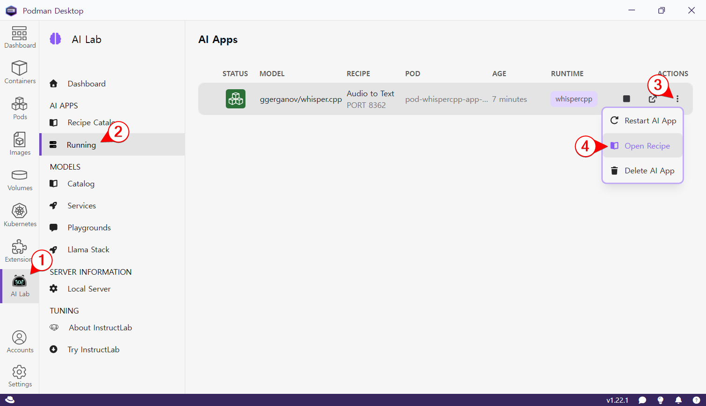
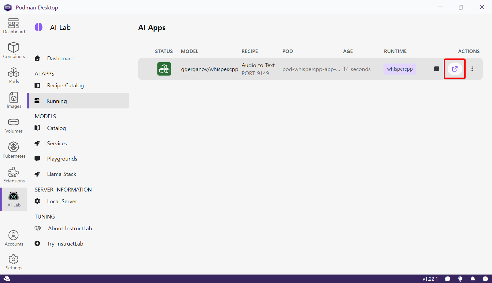
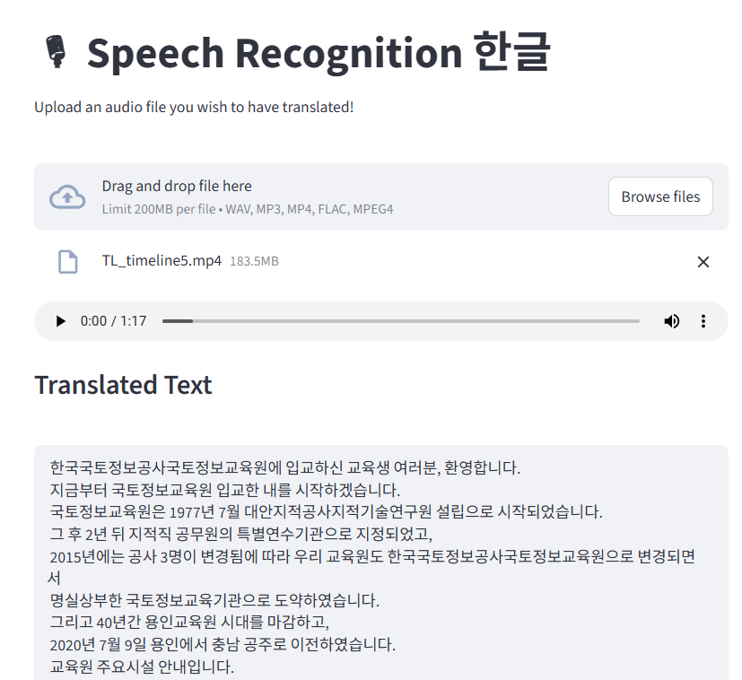

podman AI Lab 실습
podman AI Lab Extension 설치

podman AI Lab extension을 다운로드 받아 설치한다.

AI의 빠른 처리를 위해 GPU 사용을 활성화한다.
Audio To Text(whisper) 다운로드

Audio To Text에서 whisper를 다운로드 받는다.

whisper를 정상적으로 다운로드 받으면 위와 같이 표시된다.
whisper 서비스 시작

‘more details’ 버튼을 누른다.

‘start’ 버튼을 누른다.

‘Start Audio To Text recipe’ 버튼을 누른다.

자동으로 모델을 다운로드 받는다.

모델을 사용할 준비가 다 되었다.
whisper 서비스 활용

Running 섹션을 선택한 후, whisper.cpp 모델을 확인하고, ’Open AI App’을 클릭한다.

웹브라우저가 열리고 음성 인식 앱이 실행된다.

‘Browse Files’ 버튼을 눌러 mp3 파일이나 mp4 파일 등을 선택한다. 이 음성 파일의 내용을 텍스트로 변환하는 거다.

표시한 부분의 이미지가 바뀌며 음성을 텍스트로 바꾸는 작업 중임을 표시한다.

이렇게 하면 한글 음성 파일을 줬는데도 영어로 번역해서 화면에 결과를 표시해 준다. 영어로 번역하는게 기본값이기 때문이다.
번역없이 한글 그대로 출력하도록 수정
다음과 같이 번역하지 않고 한글 그대로 보여주도록 수정해 준다.

- AI Lab을 선택한다(계속 선택되어 있는 상태)
- “Running“을 선택한다.
- Actions의 … 을 선택한다.
- “Open Recipe“를 선택한다.

“Open In VSCode“를 선택한다.


이렇게 2번 정도 경고가 나오는데 모두 “예“를 선택한다.

vscode가 실행되고 whisper_client.py 라는 파일이 열린다. 좀전의 웹페이지를 만드는 파이썬 코드인데, 이 코드를 다 지우고 다음의 코드로 완전히 대체한다.
import streamlit as st
import requests
import os
import ffmpeg
st.set_page_config(page_title="Whisper Speech Recognition!", page_icon=":studio_microphone:")
st.title(":studio_microphone: Speech Recognition 한글")
st.markdown("Upload an audio file you wish to have translated!")
endpoint = os.getenv("MODEL_ENDPOINT", default="http://0.0.0.0:8001")
endpoint = f"{endpoint}/inference"
endpoint_bearer = os.getenv("MODEL_ENDPOINT_BEARER")
request_kwargs = {}
if endpoint_bearer is not None:
request_kwargs["headers"] = {"Authorization": f"Bearer {endpoint_bearer}"}
audio = st.file_uploader("", type=["wav","mp3","mp4","flac"], accept_multiple_files=False)
# read audio file
if audio:
audio_bytes = audio.read()
st.audio(audio_bytes, format='audio/wav', start_time=0)
request_kwargs["files"] = {'file': audio_bytes}
request_kwargs["data"] = {'language': 'ko', 'translate': 'false'}
response = requests.post(endpoint, **request_kwargs)
response_json = response.json()
st.subheader(f"Translated Text")
st.text_area(label="", value=response_json['text'], height=300)
else:
st.write("Input not provided")
코드는 한 두줄 수정되었는데, 한국어를 사용하고, 번역은 하지 말라는 코드를 추가했다.
request_kwargs["data"] = {'language': 'ko', 'translate': 'false'}
이 부분이 핵심이다.
이제 이 서비스를 다시 시작해야 한다. 웹페이지에서 “새로 고침“하는 것으로는 안 된다.

“Restart AI App“을 실행한다.


2번 정도 확인하는데 다시 실행하기 위해 “Confirm”, “Continue” 등의 긍정적인 답을 해준다.

이 화면이 계속 나온다. 서비스가 다시 시작되기까지 약 2-3분 정도 걸린다.
서비스가 다시 시작되면

“Open AI App” 버튼을 누른다.

이제 한글 음성이 영어로 번역되지 않고 한글로 잘 나온다.